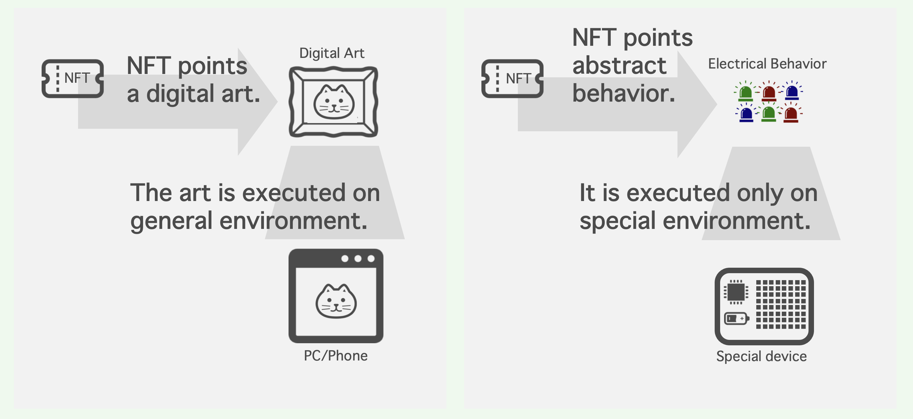

MATRIXDIODEは電気的なふるまいをNFTとして固定する実験です。
多くのNFTアートは画像や動画、3Dモデルやテキストに紐付けられるtokenとして扱われます。tokenが紐付いている多くのデジタルコンテンツは、スマートフォンなどのデジタルデバイス上で閲覧・実行することができます。
一方、MATRIXDIODEのNFTは特定のハードウェア上の電気的なふるまい、LEDの点灯パターンに紐付いています。そのため、NFT所有者(または非所有者)がNFTの紐付け先を閲覧・実行するためには、実行環境としてのハードウェアを調達または自ら製造する必要があります。

MATRIXDIODEは以下のような検討を提起します。
- ふるまいをNFTとして扱うとはどういうことか
- NFT所有者がそれに対応するふるまいをexecできない状況とは何か
- 購入したハードウェアの上でNFTに紐付けられたふるまいを実行した場合、価値はどの部分に存在するか